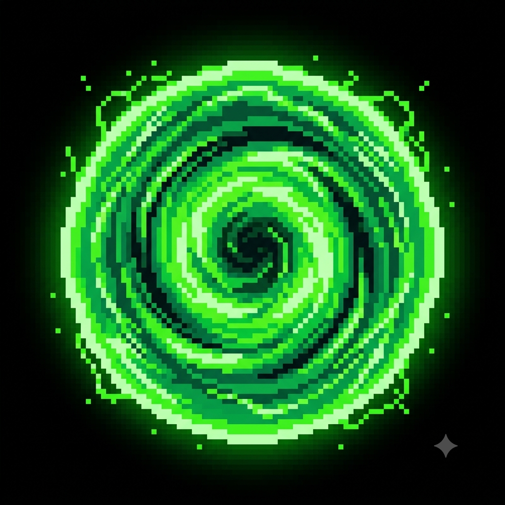
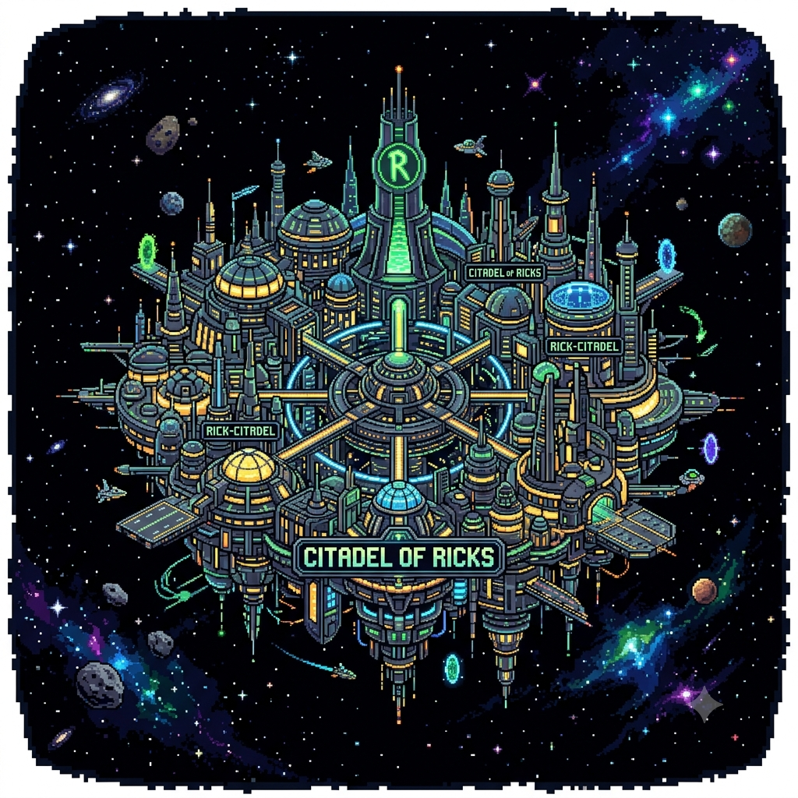
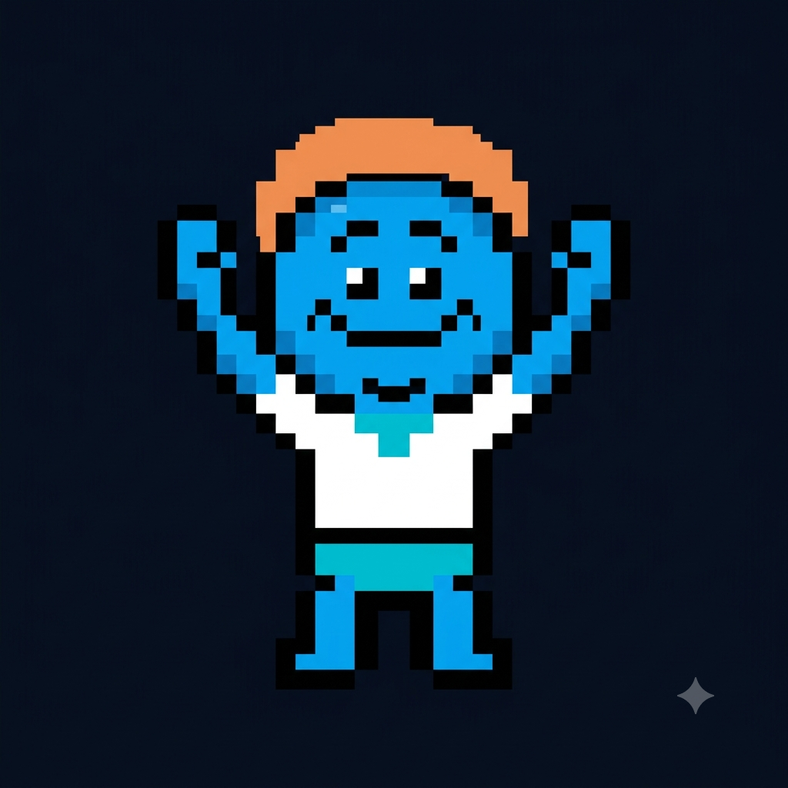
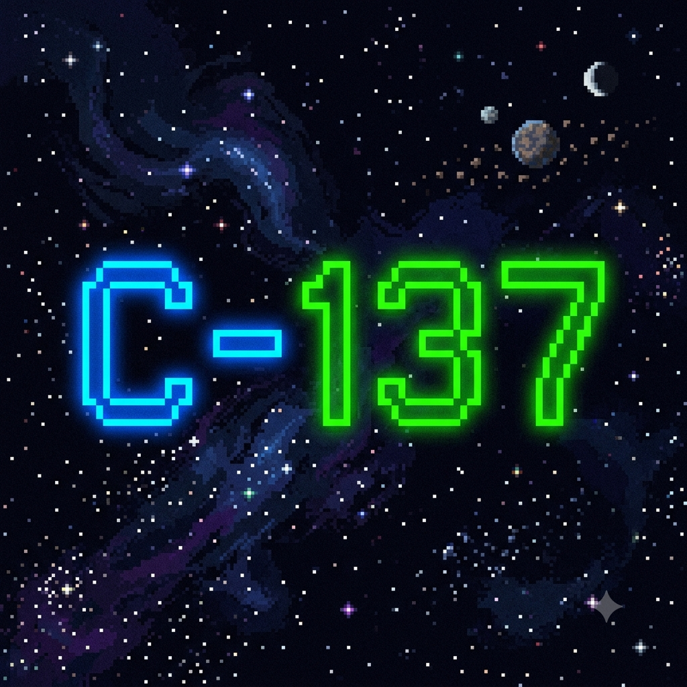
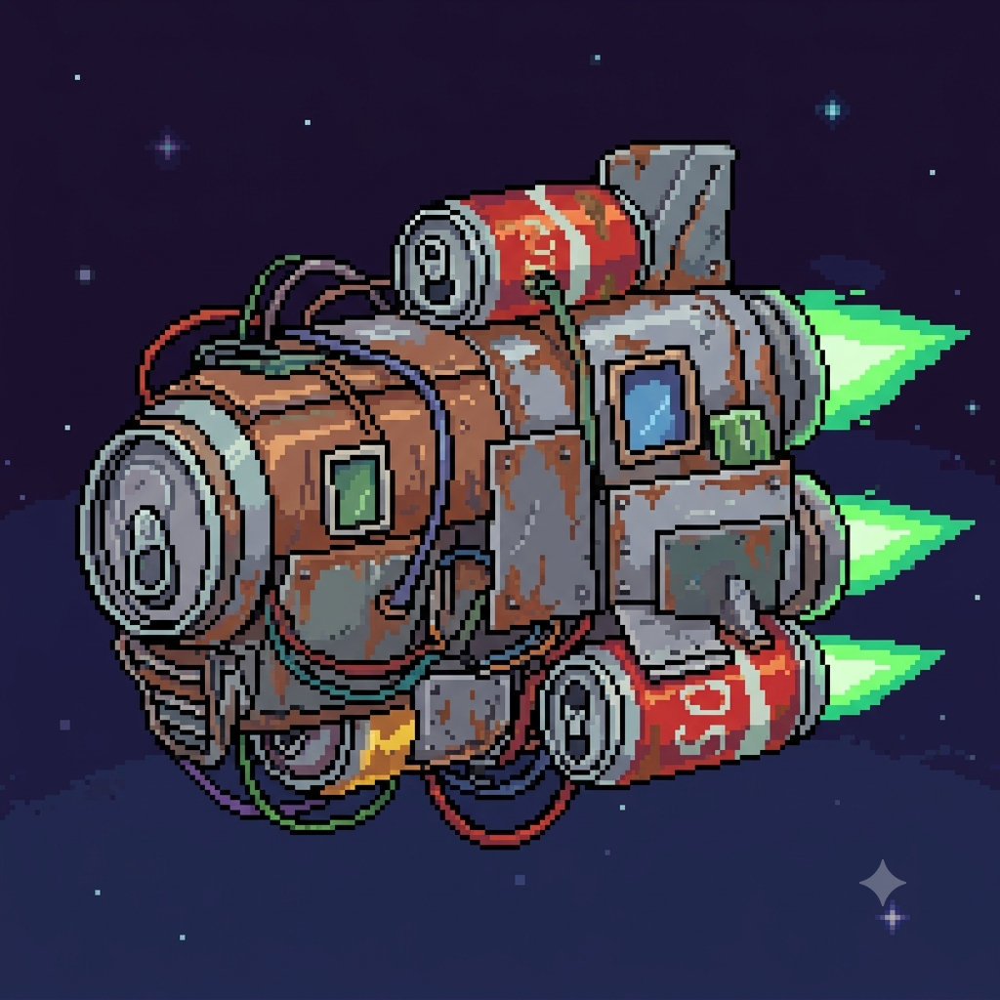
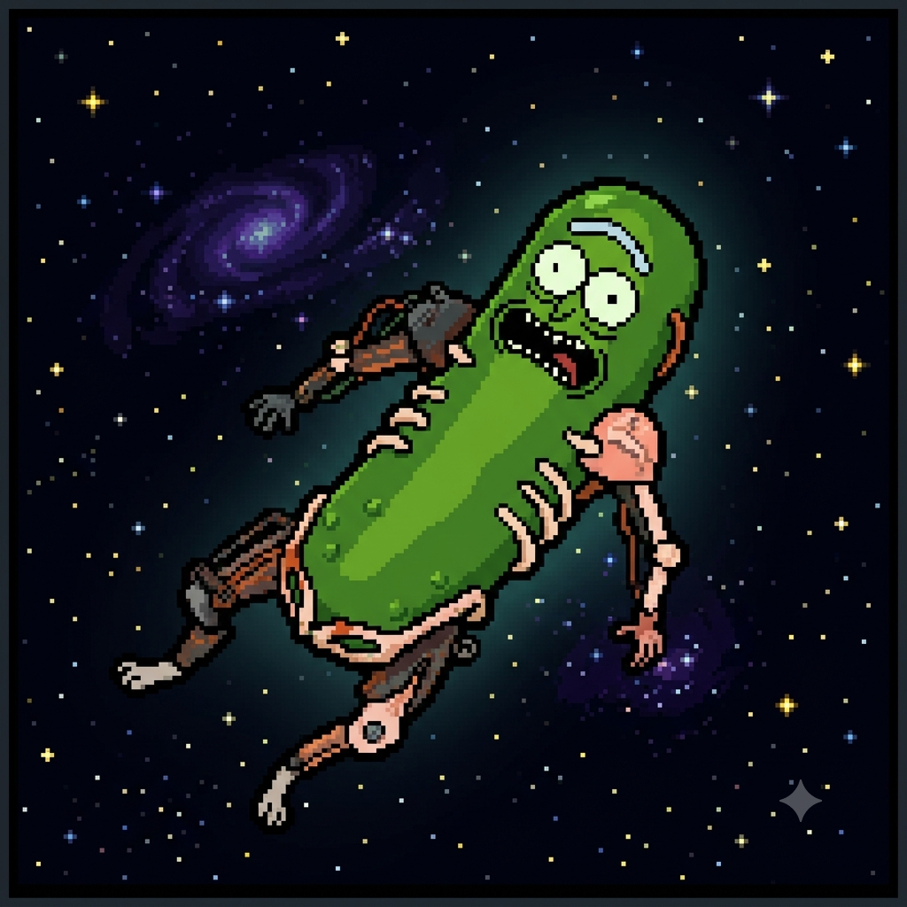

O Portal Verde Interdimensional
Por: Natasha Moreira
A famosa Arma de Portais permite viajar por infinitas dimensões. A cor verde característica se tornou a marca registrada de toda a franquia!
Fonte: Portal Gun Manual
Curiosidades, teorias e fatos sobre as aventuras interdimensionais mais insanas do universo!

Por: Natasha Moreira
A famosa Arma de Portais permite viajar por infinitas dimensões. A cor verde característica se tornou a marca registrada de toda a franquia!
Fonte: Portal Gun Manual

Por: Natasha Moreira
Para fugir de uma sessão de terapia familiar, Rick se transforma em um pepino. O episódio venceu até um prêmio Emmy pela genialidade do roteiro!
Fonte: Adult Swim

Por: Natasha Moreira
Os Meeseeks são criados com o único propósito de realizar uma tarefa simples e depois desaparecer. Viver por muito tempo causa dor extrema a eles!
Fonte: Meeseeks Box Guide

Por: Natasha Moreira
C-137 é a dimensão de origem registrada do Rick principal da série. Na física, 1/137 é uma constante fundamental que intriga cientistas no mundo real.
Fonte: Teorias do Multiverso

Por: Natasha Moreira
A nave espacial de Rick foi inteiramente construída por ele na garagem usando latas de refrigerante, peças velhas e objetos descartados do lixo.
Fonte: Garagem do Rick

Por: Natasha Moreira
Uma sociedade secreta e gigantesca criada por Ricks e Mortys de infinitas dimensões para se protegerem do resto do universo e do governo intergaláctico.
Fonte: Arquivos da Cidadela